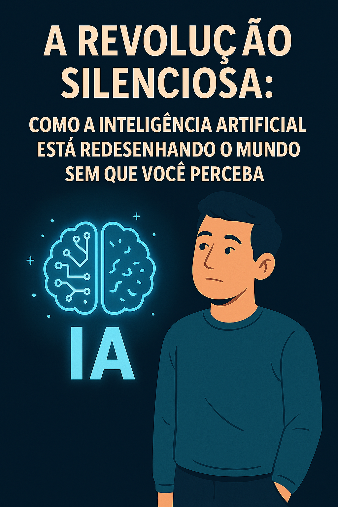

A Revolução Silenciosa: Como a Inteligência Artificial Está Redesenhando o Mundo Sem Que Você Perceba
Enquanto você lê este post, a Inteligência Artificial está transformando silenciosamente a forma como vivemos, aprendemos e trabalhamos. E o mais curioso? A maioria das pessoas nem percebe que isso está acontecendo.
A IA já está no diagnóstico precoce de doenças, na organização do trânsito, nos sistemas de recomendação das suas músicas favoritas, e até ajudando agricultores a prever safras. Ela não precisa de megafones, apenas de dados, padrões e inteligência para atuar nos bastidores com precisão.
Na educação, ferramentas como ChatGPT e plataformas personalizadas estão ajudando estudantes a aprender no seu próprio ritmo, com recursos adaptados às suas dificuldades. Isso significa que o aprendizado deixou de ser engessado e virou uma experiência única para cada pessoa.
A revolução é silenciosa, mas seus efeitos são profundos. Estamos vendo profissões se reinventando, empresas ganhando produtividade e soluções sendo criadas para problemas antes considerados insolúcionáveis.
"A maior mudança do nosso tempo não está gritando, está sussurrando em cada canto digital do nosso cotidiano."
E você? Vai esperar ser atropelado pela revolução ou vai embarcar nela de forma inteligente?
Voltar ao BlogIvomar Lima, criador do EduVerso IA